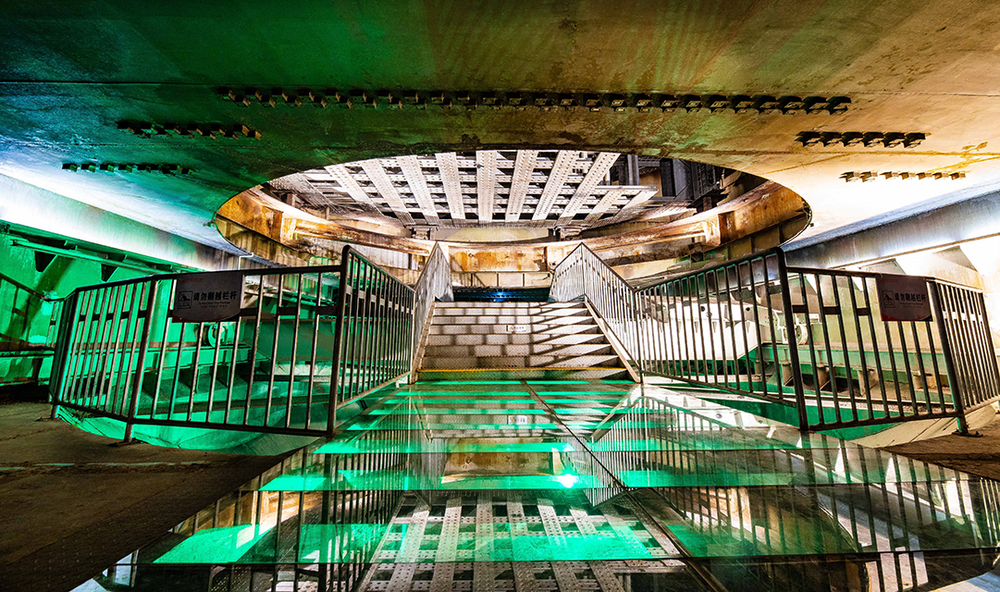

Hidden in the mountains of Fuling, Chongqing, Project 816 was built between 1966 and 1984 at a cost of 740 million yuan and with the labor of nearly 60,000 builders—yet it was never put into operation. Unlike most nuclear-industrial sites that remain sealed by secrecy, 816 was later able to open to the public, leaving behind not only tunnels and chambers, but the unreconciled lives of those who built a mission that history cancelled.

This reported narrative treats Project 816 as both an industrial ruin and a living social system. Built for a future that never arrived, the site is read through field visits and oral histories: not to romanticize “secrecy,” but to track how a cancelled mission still organizes memory, labor, and local life decades later.
Lost History: The Secret of Baitao Town
My first impression of Fuling came from Peter Hessler’s River Town. In August 1996, he took a slow boat from Chongqing downriver into this small city in eastern Sichuan. Fuling in the 1990s, as he wrote, had “terrible roads. To go anywhere you had to take a boat—and most likely you wouldn’t go anywhere at all.” For years the city had not been open to foreigners; Hessler himself did not know what it meant to local people that an American was living there. Yet he learned that in the 1950s and 1960s, U.S. nuclear threats pushed Mao Zedong to relocate armament factories into the remote mountains of the Southwest—and Fuling was one of them. Looking back now, that sense of closure and isolation may not have been merely geographic. Compared with Fuling, the town I was heading to—Baitao—was even more hidden; for a time it virtually disappeared from maps. For decades, its name was replaced by a code. In letters, documents, and personnel-transfer records, it was known only as “Chongqing P.O. Box 4513.” Although Project 816 was halted in 1984 and the area was no longer a forbidden zone, its past and its location did not truly surface until the project was declassified in 2002.
Lost History: The Turning Point in 1982
Fan Chenghua, now seventy-eight, no longer remembers the details of that day. He recalls only an ordinary morning: the plant was busy as usual, workers and engineers at their posts. When he received the notice, he gave it no special thought—he walked into the small auditorium as he always did, assuming it was a routine meeting. But when he pushed open the doors, he was met by an unusual scene: the hall, built for 480 people, was packed; employee representatives from every department were present, and the air felt more solemn than any meeting before. Soon the bureau chief stepped onto the stage and announced the state’s decision: because of changes in the international situation and the needs of national economic development, Project 816 would be suspended. The factory would undergo “military-to-civilian conversion,” and all future development would have to be self-financed and self-sustaining. The hall erupted. With that decision, the colossal project hidden in the mountains abruptly lost its mission.
Division 54: A Hidden Hero Unit
“Entering the tunnels was like going to war—you had to be prepared to die,” Chen Huaiwen recalled. Groundwater and cave-ins were the greatest threats. When the pneumatic drill reached a certain depth, the bit might suddenly drop into empty space: surging groundwater below, and the roof above could collapse in an instant. Once they hit a karst cavity; the rock kept cracking, the water rose fast, and everyone was trapped in darkness. To stabilize the foundation they stuffed channels with timber, then reinforced them with cement and rebar to ensure construction could continue. Often the crew could only rely on experience to decide when to pull back—but danger usually arrived faster.
The Unfinished Computer and the Lost Underground Factory
In 1978, Sun Guoguang returned to Factory 816 with the equipment. To her surprise, the underground complex could not accommodate it at all: the main control room had already been installed, designed according to the old system from Factory 404, with no space reserved. In the end, the machine could only be placed in the “Red Building” outside the tunnels. Because the computer was highly vulnerable to interference, the building was fitted with wooden floors and central air-conditioning and required frequent maintenance. The plan was to run it on a trial basis outside first, then move it into the underground complex once everything stabilized, where it would monitor and control the reactor. But after years of trial operation, it was never moved inside—and eventually fell completely idle.
Ruins Aesthetics and the Reconstruction of Memory
Project 816 became a site—an industrial relic. Chen Huaiwen took an active role in building the tourist area, hoping people would understand the story of Division 54 and see that their labor was not “for nothing,” nor were they “foolish.” “In that Cold War era, Project 816 was a strategic choice of the state. It was precisely because such war-preparation projects existed that war did not happen,” he said. He believes that although Project 816 never ran, its existence nonetheless altered the course of history. ■